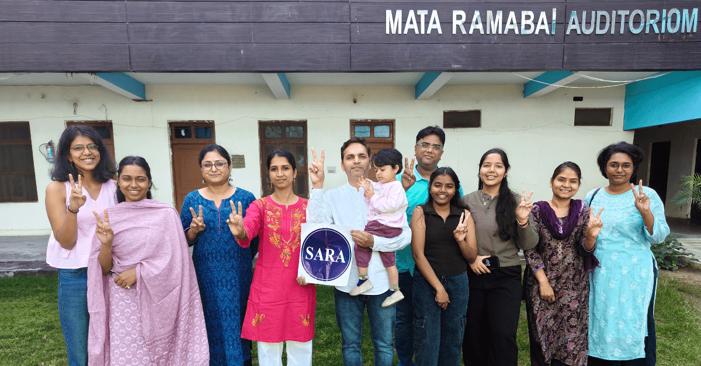
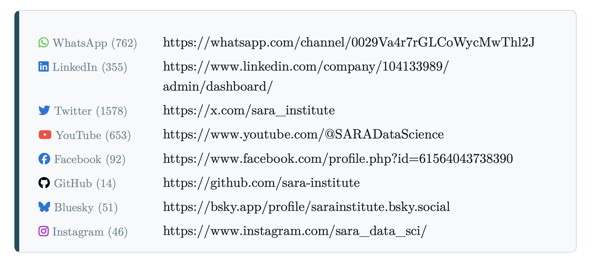

🌺 🙏🏽 🌼


🌺 🙏🏽 🌼
Savitribai Ramabai (SARA) Institute of Data Science
Data Schools




The Ambedkar
Educational Society Sonipat

Savitribai Ramabai (SARA) Institute of Data Science

The Ambedkar
Educational Society Sonipat
Social Media
